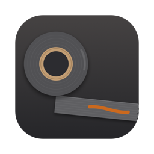

Veranstaltungs-Toolbox
Alle Programme von Norbert Bungalski – kostenlos herunterladen.
Für den Mac: die Toolbox-App
Eine App für alles: zeigt alle Programme, installiert sie mit einem Klick und hält sie aktuell.
Lade …
Alle Programme
Lade Programme …
Mac: „App kann nicht geöffnet werden“ – was tun?
Die Programme sind nicht bei Apple registriert (kein kostenpflichtiges Entwickler-Zertifikat), deshalb warnt macOS beim ersten Öffnen.
- Zip entpacken und die App in den Ordner Programme ziehen.
- App öffnen → es kommt „nicht geöffnet“ → Fertig klicken.
- Systemeinstellungen → Datenschutz & Sicherheit → ganz unten bei der App „Trotzdem öffnen“ klicken und bestätigen.
Alternativ im Terminal: xattr -cr "/Applications/Veranstaltungs-Toolbox.app"
Programme, die du über die Toolbox-App installierst, öffnen sich ohne diese Warnung.
Welcher Mac? Apfel-Menü → „Über diesen Mac“: steht dort Apple M…, nimm „Apple Silicon“, bei Intel die Intel-Datei.
Windows: „Der Computer wurde geschützt“
Zip entpacken, Programm starten. Bei der blauen Meldung: Weitere Informationen → Trotzdem ausführen.